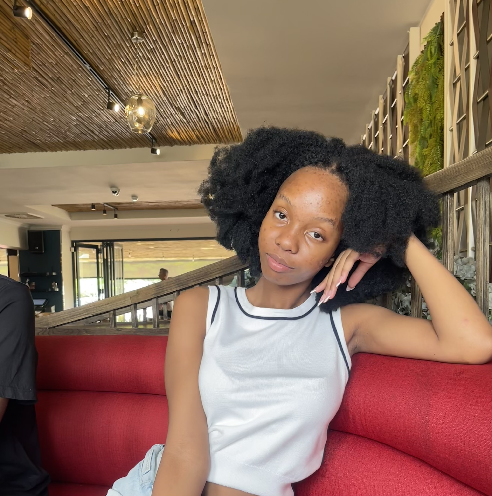

Hi, I'm Karabo
I am a Business Intelligence and Data Analytics student from Botswana with a growing passion for web development and digital innovation. I am particularly interested in how technology, data, and design come together to create meaningful and engaging digital experiences. I enjoy learning how websites are structured and styled, and I am continuously developing my skills in HTML, CSS, and digital design to strengthen my technical foundation. Beyond academics, I am motivated by growth, leadership, and self-improvement. I strive to build a professional digital presence that reflects both my analytical mindset and my creative side, as I prepare for a future career in the tech and business industry.

As an aspiring developer, my goal is to build innovative and user-friendly digital solutions that make a meaningful impact. I aim to strengthen my technical skills in web development while continuing to grow in areas such as problem-solving, data analysis, and leadership. I am committed to continuous learning and adapting to new technologies so that I can create modern, responsive, and efficient websites. Ultimately, I hope to combine my background in business intelligence with web development to develop solutions that are both strategically driven and technically strong.
My Skills
- Access Database-Input, organise and manage data
- Microsoft Word-Writing assignments and research
- VS Code - Basic website development and HTML editing
- Git & GitHub
- Canva-Poster and presentation design
- Time Management- Balancing studies and personal life
When I'm Not Coding
Outside of my academic work, I enjoy activities that allow me to relax while still being creative and strategic. I love playing games such as The Sims 4, Fortnite, and Roblox, as they allow me to explore creativity, problem-solving, and virtual world-building in different ways.